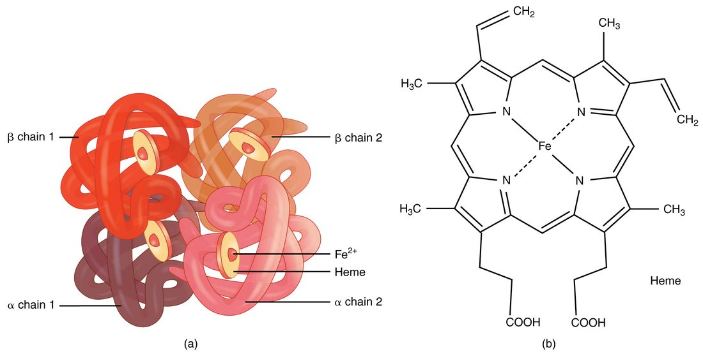

Red blood cells and hemoglobin
Erythrocytes are biconcave discs with no nucleus or organelles, packed with hemoglobin: four globin chains (two alpha, two beta in adults), each holding a heme ring with an iron ion that binds one oxygen molecule.
Part 1 · Clinical hook
Why this matters
Mr. Castillo, 58, has felt tired for months and now gets breathless climbing one flight of stairs. He looks pale. His hemoglobin is 8.9 g/dL, and his red blood cells are small and pale. A stool test finds traces of blood: a slow bleed somewhere in his gut has been draining his iron for a year. To see how a hidden bleed turns into small, pale red cells, you need to follow a red blood cell from the marrow to its breakdown.
Part 2 · Foundations
What this builds on
Part 3 · Prerequisite check
Quick check before you start
1. In a negative feedback loop, what does the response do to the stimulus?
- It amplifies the stimulus
- It opposes the stimulus
- It has no effect on the stimulus
Show the answer
In negative feedback, the response pushes the variable back toward its set point, so it opposes, or removes, the stimulus that started the loop.
- It amplifies the stimulus:
- Correct: It opposes the stimulus:
- It has no effect on the stimulus:
2. Which organ releases erythropoietin when the oxygen reaching it falls?
- The liver
- The kidneys
- The red bone marrow
Show the answer
Most erythropoietin comes from cells in the kidneys that sense low oxygen. The marrow is its target, not its source.
- The liver:
- Correct: The kidneys:
- The red bone marrow:
3. A spun blood sample has a hematocrit of 45%. What does that number mean?
- 45% of the blood volume is red blood cells
- 45% of the blood's cells are red blood cells
- The blood holds 45 g of red cells per liter
Show the answer
The hematocrit is the percentage of a blood sample's volume made up of red blood cells.
- Correct: 45% of the blood volume is red blood cells:
- 45% of the blood's cells are red blood cells:
- The blood holds 45 g of red cells per liter:
Part 4 · Anatomy panel
Anatomy

With labels hidden, select a box to reveal its label.
Part 5 · Causal chain
How it works, step by step
- Fewer red cells, thinner air or weak lungs lower the oxygen reaching the kidneys.Oxygen-sensing cells in the kidney tissue switch on the erythropoietin gene and release erythropoietin (EPO) into the blood.
- EPO reaches the red bone marrow and binds receptor proteins on erythroid precursors.More precursors survive, divide and fill with hemoglobin, and reticulocytes pour into the blood within 3–5 days.
- Over weeks, the extra reticulocytes mature into erythrocytes.The red cell count and hemoglobin rise, so each liter of blood carries more oxygen.
- More oxygen now reaches the kidneys.The stimulus is removed, EPO release falls, and red cell production slows to its resting rate: negative feedback.
Part 6 · Key ideas
Key ideas
- Bilirubin (bili- = bile, rub- = red) is a yellow-orange pigment made from the heme ring of an old red blood cell. An enzyme opens the ring, without its iron, to make green biliverdin, which is quickly converted to bilirubin. It dissolves poorly in water, so it travels in the plasma bound to albumin until the liver removes it.
- Transferrin is a plasma protein that carries iron through the blood, to the marrow for new hemoglobin or to storage. Ferritin is a hollow protein shell that stores iron inside cells; a low plasma ferritin means the stores are empty.
- Jaundice (French jaune = yellow) is a yellowing of the skin, the whites of the eyes and the mucous membranes that appears when bilirubin builds up in the blood. It becomes visible above about 2.5 to 3 mg/dL, first in the whites of the eyes.
- Anemia (an- = without, -emia = blood condition) is a fall in the blood's ability to carry oxygen because it holds too little hemoglobin: below about 13 g/dL in men and 12 g/dL in women who are not pregnant. It comes from blood loss, too little production (iron deficiency, the most common cause) or early destruction of red cells.
- Sickle cell disease is an inherited disease caused by a single change in the beta globin gene, which replaces one amino acid in the beta chain and produces hemoglobin S. When they give up their oxygen, HbS molecules line up into stiff fibers that bend the red cell into a rigid crescent, which jams small vessels and is destroyed after only 10 to 20 days.
- Polycythemia (poly- = many, cyt- = cell, -emia = blood condition) is an abnormally high red cell count and hematocrit. The extra red cells make the blood thicker, which raises resistance to flow, so blood moves more slowly through small vessels and clots form more easily.
Part 7 · Core concept
Core concepts
Part 8 · Misconception
A common mistake
The wrong idea: Anemia means iron deficiency.
What actually happens: Anemia means the blood holds too little hemoglobin to carry a normal load of oxygen, from any cause. Iron deficiency is the most common cause, but bleeding, a lack of vitamin B12 or folate, marrow failure, too little erythropoietin from failing kidneys, and early destruction of red cells, as in sickle cell disease, all cause anemia too. Giving iron to someone whose anemia has another cause does not help and can load the body with iron it cannot excrete.
Part 9 · Retrieval check
Check yourself
Anything you miss goes into your review queue.
1. A woman moves from a coastal city to a town 3,500 m up a mountain. The air there holds less oxygen. Predict the change in each variable after she has lived there for six weeks, compared with before she moved.
| Variable | Change |
|---|---|
| Reticulocyte count | — |
| Red blood cell count | — |
| Hematocrit | — |
| Hemoglobin per liter of blood | — |
| Blood viscosity | — |
| Oxygen each gram of hemoglobin carries when fully loaded | — |
Show the answer
Thin air lowers the oxygen reaching the kidneys. Through the erythropoiesis feedback loop, EPO rises within hours and the marrow speeds up. EPO eases back from its early peak over the following days, but the extra red cells keep coming for weeks. Her red cell count, hematocrit and hemoglobin climb, and the cost is thicker blood.
- Reticulocyte count: up. EPO makes more erythroid precursors survive and mature, so more young red cells enter the blood each day.
- Red blood cell count: up. Weeks of faster production add more red cells than are destroyed.
- Hematocrit: up. The red cell volume has grown, so red cells are a larger share of the blood's volume.
- Hemoglobin per liter of blood: up. More red cells in each liter means more hemoglobin in each liter.
- Blood viscosity: up. Viscosity depends mostly on the hematocrit, which has risen.
- Oxygen each gram of hemoglobin carries when fully loaded: no change. A fully loaded gram of hemoglobin carries the same oxygen as before. Altitude changes how much hemoglobin there is, not what each gram can hold.
2. Put the steps in order to trace the heme of an old red blood cell until it leaves the liver.
- A macrophage in the spleen engulfs an old red cell
- Heme is split from globin, and its iron is removed
- The ring is opened to form green biliverdin
- Biliverdin is converted to yellow bilirubin
- Bilirubin travels in the plasma bound to albumin
- Liver cells conjugate bilirubin and secrete it in bile
Show the answer
Macrophages break down old red cells, split off the iron and open the heme ring into biliverdin, then bilirubin. Poorly soluble bilirubin rides on albumin to the liver, which conjugates it and secretes it in bile. In the intestine, bacteria later turn it into urobilinogen and then brown stercobilin.
- Correct order: 1. A macrophage in the spleen engulfs an old red cell 2. Heme is split from globin, and its iron is removed 3. The ring is opened to form green biliverdin 4. Biliverdin is converted to yellow bilirubin 5. Bilirubin travels in the plasma bound to albumin 6. Liver cells conjugate bilirubin and secrete it in bile
3. A 32-year-old woman with very heavy periods has a hemoglobin of 9 g/dL. Her red cells are small and pale, and her plasma ferritin is very low. What is the most likely cause of her anemia?
- Too little vitamin B12 in the diet
- Failing kidneys
- Iron deficiency from blood loss
- Early destruction of red cells
Show the answer
Each heavy period removes iron in the lost red cells. Over months her stores run out, which a low plasma ferritin shows. Without iron, erythroblasts cannot fill with hemoglobin, so the cells come out small and pale.
- Too little vitamin B12 in the diet: A lack of B12 stalls DNA synthesis, so red cells come out large, not small, and ferritin is normal.
- Failing kidneys: Kidney failure lowers EPO, but the cells it produces are normal in size and iron stores are normal.
- Correct: Iron deficiency from blood loss: Correct. Small, pale cells with empty iron stores point to iron deficiency.
- Early destruction of red cells: Early destruction raises the reticulocyte count and the bilirubin, and the body keeps the recovered iron, so ferritin would not be low.
4. A patient is anemic and jaundiced, with a reticulocyte count of 9% and a normal ferritin. Which cause best fits?
- Aplastic anemia
- Early destruction of red cells
- Iron-deficiency anemia
- Anemia of long-standing kidney failure
Show the answer
A high reticulocyte count shows a healthy marrow working hard, so the red cells are being lost, not underproduced. Jaundice shows that heme is being broken down faster than the liver can clear bilirubin. Together they point to hemolysis, early destruction of red cells.
- Aplastic anemia: In aplastic anemia the marrow has failed, so the reticulocyte count is very low.
- Correct: Early destruction of red cells: Correct. Fast destruction explains both the jaundice and the busy marrow.
- Iron-deficiency anemia: Without iron, the marrow cannot respond, so reticulocytes stay low and ferritin is low.
- Anemia of long-standing kidney failure: With too little EPO, the marrow is not driven to respond, so reticulocytes stay low, and there is no extra bilirubin.
5. A woman has yellow skin and eyes, dark brown urine and pale, clay-colored feces. Where on bilirubin's route is the problem most likely to be?
- Red cells are breaking down too fast
- Her liver cells take up too little bilirubin
- Bile cannot drain from the liver into the intestine
- Her kidneys are excreting too little urobilin
Show the answer
Pale feces mean no bilirubin is reaching the intestine to become brown stercobilin. Dark urine means conjugated bilirubin, the water-soluble kind, is backing up into the blood and spilling into the urine. Both fit a blockage after the liver, such as a gallstone.
- Red cells are breaking down too fast: Fast breakdown raises mostly unconjugated bilirubin, which cannot enter urine, and more pigment reaches the gut, not less. Feces would not be pale.
- Her liver cells take up too little bilirubin: If the liver could not take up bilirubin, the excess would be unconjugated, which does not darken urine.
- Correct: Bile cannot drain from the liver into the intestine: Correct. A blocked outflow sends conjugated bilirubin back into the blood.
- Her kidneys are excreting too little urobilin: Urobilin is a small share of pigment and does not cause jaundice. Less of it would make urine paler, not darker.
6. Why can dehydration or low oxygen set off a pain crisis in a person with sickle cell disease?
- Both raise erythropoietin and so the number of new sickle cells
- Both make the spleen release stored sickle cells
- Both make hemoglobin S bind oxygen too tightly
- Both favor HbS fibers: less oxygen bound, or HbS packed tighter
Show the answer
HbS forms fibers when it has given up its oxygen, and it does so faster the more concentrated it is. Low oxygen makes more HbS unload; dehydration shrinks the cell and concentrates the HbS. Stiff sickled cells then jam small vessels.
- Both raise erythropoietin and so the number of new sickle cells: New red cells take days to make, and a crisis starts within hours. Fiber formation, not new cells, is the trigger.
- Both make the spleen release stored sickle cells: The spleen does not store and release sickle cells. It is damaged by them.
- Both make hemoglobin S bind oxygen too tightly: The problem is the opposite: sickling happens after HbS has let go of its oxygen.
- Correct: Both favor HbS fibers: less oxygen bound, or HbS packed tighter: Correct. Less oxygen bound and a more crowded cell both speed fiber formation.
7. A cyclist is brought in ten minutes after a crash in which he lost about a liter of blood. His hematocrit is 44%, in the normal range. What is the best interpretation?
- He has lost little blood, or his hematocrit would be low
- His marrow has already replaced the lost red cells
- The test is wrong: bleeding lowers the hematocrit at once
- He lost cells and plasma together, so the ratio has not changed yet
Show the answer
A wound loses whole blood, cells and plasma in the same proportion, so the hematocrit is unchanged at first. Over the next hours, fluid moves into the blood from the tissues and dilutes the remaining cells, and the hematocrit falls. A normal early hematocrit does not rule out a large bleed.
- He has lost little blood, or his hematocrit would be low: The hematocrit is a ratio; it cannot show a loss of volume in the first minutes.
- His marrow has already replaced the lost red cells: Making red cells takes days, and reticulocytes rise only after 3–5 days.
- The test is wrong: bleeding lowers the hematocrit at once: The value is expected. The fall comes later, as plasma is refilled.
- Correct: He lost cells and plasma together, so the ratio has not changed yet: Correct. The ratio falls only once fluid moves in to refill the plasma.
Part 10 · Summary
Summary
Erythrocytes are biconcave discs with no nucleus or organelles, packed with hemoglobin: four globin chains (two alpha, two beta in adults), each holding a heme ring with an iron ion that binds one oxygen molecule. They make ATP by glycolysis and live about 120 days. Erythropoiesis in red marrow passes through erythroblasts and reticulocytes, needs iron, vitamin B12 and folate, and is driven by erythropoietin from the kidneys in a negative feedback loop that senses oxygen delivery. Macrophages in the spleen, liver and marrow destroy old cells: globin becomes amino acids, iron travels on transferrin to the marrow or into storage as ferritin and hemosiderin, and heme becomes biliverdin and then bilirubin, which the liver conjugates and secretes in bile. Excess bilirubin causes jaundice. Anemia, a shortage of hemoglobin, comes from blood loss, too little production (iron, B12, EPO or marrow failure) or early destruction (sickle cell disease, thalassemia); the reticulocyte count and cell size help tell them apart. Polycythemia, too many red cells, thickens the blood.
Part 11 · Up next
What comes next
Part 12 · Connections